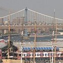
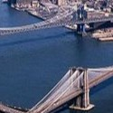

List of bridges and tunnels in New York City
New York City is home to many bridges and tunnels. Several agencies manage this network of crossings.
The New York City Department of Transportation owns and operates almost 800. The Metropolitan Transportation Authority, Port Authority of New York and New Jersey, New York State Department of Transportation and Amtrakhave many others.
Many of the city's major bridges and tunnels have broken or set records. Opened in 1927, the Holland Tunnelwas the world's first mechanically ventilated underwater vehicular tunnel.
The Brooklyn Bridge, Williamsburg Bridge, George Washington Bridge ,andVerrazzano-Narrows Bridgewere the world's longestsuspension bridgeswhen opened in 1883,[2] 1903,[3] 1931,[4] and 1964[5] respectively. There are 789 bridges and tunnels in New York.
New York City's crossings date back to 1693, when its first bridge, known as the King's Bridge, was constructed over Spuyten Duyvil Creek between Manhattan and the Bronx, located in the present-day Kingsbridge neighborhood.
East River
| Name | Opening Year | Carrier | Length |
|---|---|---|---|
| Brooklyn Bridge | 1883 | 5 lanes of roadway (2 Manhattan-bound, 3 Brooklyn-bound) | 5,988 feet and 1,825 meter |
| Manhattan Bridge | 1909 | 7 lanes of roadway and "B" train"D" train"N" train"Q" train | 6,854 feet and 2,089 meter |
| Queensboro Bridge | 1909 | 9 lanes of NY 25 (Queens Boulevard) | 3,724 feet and 1,135 meter |
| Rikers Island Bridge | 1966 | 2 lanes of roadway | 4,200.0 feet and 1,280.16 meter |
Comments
Oldest suspension bridge in NYC. Also oldest suspension/cable-stayed hybrid bridge.
Double-decker bridge with 5 westbound lanes and 2 eastbound lanes. 3 of the westbound lanes and the subway are below the other 4 lanes.
Officially known as the Ed Koch Queensboro Bridge. Also known as 59th Street Bridge. Reversible 4 lanes on the upper deck, and 2 westbound/3 eastbound lanes on the lower deck.
Write A Comment